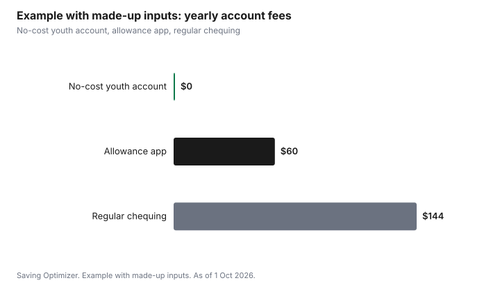

Kids · Canada
Kids' and Youth Bank Accounts in Canada: Fees, Joint Accounts and Allowance Apps

A child's first bank account in Canada should cost nothing. Banks that signed the federal commitment on low-cost and no-cost accounts offer a no-cost account to youth and students, and a low-cost account of up to $4 a month to anyone. Choose whether the account is in the child's name alone or joint with a parent, set debit card limits, and treat allowance apps and prepaid cards as a separate offer type, often with a monthly fee, to compare against a free youth account.
Key takeaways
- Under the federal commitment, participating banks offer a no-cost account to youth 18 or under and to students, and a low-cost account of up to $4 a month to anyone.
- The bank confirms eligibility when the account is opened and periodically after. Ask what happens at the age the youth account ends.
- Joint accounts let a parent see and move money; sole accounts give the child control. Banks set their own minimum ages.
- Allowance apps and prepaid cards are an offer type with features like chores and spending controls, and often a monthly fee.
- Example with made-up inputs: a $5 monthly app fee costs $60 a year, compared with $0 for a no-cost youth account.
The no-cost youth account
The Financial Consumer Agency of Canada explains that banks covered by the commitment on low-cost and no-cost accounts offer a low-cost account costing up to $4 a month, with no minimum balance and a set of included services, and a no-cost account for eligible groups that include youth aged 18 or under and students. The commitment was modernized, and FCAC said in November 2025 that the accounts now include more monthly transactions. The bank validates eligibility when the account is opened and periodically after.
Ask the bank three questions: what the account includes each month, what age or status ends the no-cost terms, and what the account changes to after that. The student banking guide covers the switch after graduation.
Joint or sole account
| Feature | Joint with a parent | In the child's name |
|---|---|---|
| Who can withdraw | Either owner | The child |
| Parent visibility | Full, in the parent's online banking | Only if the child shares it or the bank offers a view |
| Good for | Younger children, learning with supervision | Teens with a job and a debit card |
| Watch for | The money is legally shared | Card limits and scam awareness |
Bring the child's ID and SIN if they have one; a SIN is needed for interest reporting and for a job. Banks set minimum ages for a sole account and for a debit card; ask before you go.
Debit cards, limits and scams
A debit card teaches spending from what you have. Set daily limits low at first. Talk about the scams aimed at teens: e-transfer requests from strangers, fake job offers that send a cheque, and messages asking for a card number or a one-time code. A bank will never ask for a password or code by text. FCAC's teaching resources cover money conversations by age.
Allowance apps and prepaid cards
Allowance apps and prepaid cards for kids are an offer type. Features usually include a card the child spends from, a parent app to send money, chore tracking and savings goals. Many charge a monthly subscription. Compare the yearly fee with a free youth account plus a simple chart on the fridge. Check whether the money is held in a way covered by deposit insurance; CDIC covers eligible deposits at member institutions, and a prepaid product may be structured differently.
Step by step: opening a child's first account
- Compare youth accounts at banks and credit unions near you, and ask what the no-cost terms include each month.
- Ask the minimum age for an account in the child's name and for a debit card.
- Book an appointment, or check whether the bank lets you open online for a minor.
- Bring your ID, the child's ID (such as a birth certificate or passport) and the child's SIN if they have one.
- Choose joint or sole, set up online banking and set the debit card limits.
- Link it to your account for allowance transfers, and show your child how to check the balance.
- Set a calendar reminder for the age when the youth terms end.
Age of majority and what changes
The age of majority is 18 in Alberta, Manitoba, Ontario, Prince Edward Island, Quebec and Saskatchewan, and 19 in British Columbia, New Brunswick, Newfoundland and Labrador, Nova Scotia, the Northwest Territories, Nunavut and Yukon. At that age, a young person can usually sign contracts such as a credit card agreement on their own. Ask the bank what happens to the youth account then, and whether student terms continue if your child enrols in post-secondary.
| Milestone | What to do |
|---|---|
| First allowance | Open a youth account, possibly joint |
| First job | Sole account for pay, debit card, SIN on file |
| Age 18 | TFSA contribution room starts accruing |
| Age of majority (18 or 19) | Can usually sign contracts alone; review account terms |
| Post-secondary | Ask about student account terms |
Deposit insurance
The Canada Deposit Insurance Corporation covers eligible deposits at member institutions, up to $100,000 per insured category per member. Credit unions are covered by provincial deposit insurers instead. If you use an allowance app, check where the money is actually held and whether it is protected.
Common mistakes
- Opening a regular account with monthly fees instead of a no-cost youth account.
- Forgetting the youth terms end at a set age.
- Leaving debit card limits at the default for a young child.
- Paying a monthly app fee for features a free account and a chart can do.
- Not talking about scams before the child gets a debit card.
Example with made-up inputs: one year of fees
These numbers are an example with made-up inputs, not real fees. A no-cost youth account costs $0 a year. A made-up allowance app at $5 a month costs $60 a year. A made-up regular chequing account at $12 a month would cost $144 a year if a youth account were not used.
| Option | Monthly fee | Yearly cost |
|---|---|---|
| No-cost youth account | $0 | $0 |
| Allowance app | $5 | $60 |
| Regular chequing account | $12 | $144 |

Sources
- Financial Consumer Agency of Canada, Low-cost and no-cost accounts, as of 1 Oct 2026. Low-cost up to $4 a month; no-cost for youth 18 or under and students; eligibility validated.
- FCAC, news release, November 2025: free and low-cost accounts with more monthly transactions.
- FCAC, Commitment on Low-Cost and No-Cost Accounts, as of 1 Oct 2026.
- Canada Deposit Insurance Corporation, coverage of eligible deposits at member institutions.
- Canada Deposit Insurance Corporation, coverage up to $100,000 per insured category per member institution, as of 1 Oct 2026.
- Every fee in the example table and chart is a made-up input.
Frequently asked questions
Can my child get a free bank account in Canada?
Banks covered by the federal commitment on low-cost and no-cost accounts offer a no-cost account to youth aged 18 or under and to students, with eligibility confirmed at opening and periodically after.
What is a low-cost bank account in Canada?
Under the commitment, a low-cost account costs up to $4 a month, has no minimum balance, and includes a set of services. Anyone can ask for one at a participating bank.
Should a child's account be joint with a parent?
A joint account lets a parent see and move the money, which suits younger children. A sole account gives a teen control. Banks set minimum ages for each; ask your bank.
Are allowance apps worth it?
They are an offer type with chore tracking and spending controls, often for a monthly fee. Compare the yearly cost with a no-cost youth account and a simple chore chart, and check how the money is protected.
What ID does my child need to open a bank account?
Banks ask for identification, and a SIN is useful for interest reporting and a future job. Requirements vary, so check with the bank before visiting.
What is the age of majority in Canada?
It is 18 in Alberta, Manitoba, Ontario, Prince Edward Island, Quebec and Saskatchewan, and 19 in British Columbia, New Brunswick, Newfoundland and Labrador, Nova Scotia and the three territories.
Are credit union deposits covered by CDIC?
No. Credit unions are covered by provincial deposit insurers. CDIC covers eligible deposits at its member institutions up to $100,000 per insured category.
Researched and drafted with AI assistance and fact-checked against official Canadian sources. How we create content.
Disclosure: Banks, allowance apps and prepaid cards are described as offer types; none is named or ranked. Saving Optimizer may earn a commission if a partner link is added later; no partnership is claimed. Education only.